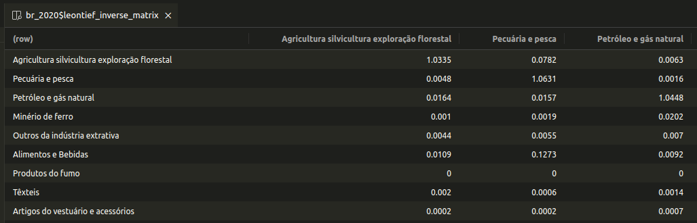

Friendly & Fast Input-Output Analysis
fio (Friendly Input-Output) is a R package designed for input-output analysis, emphasizing usability for Excel users and performance. It includes an RStudio Addin and a suite of functions for straightforward import of input-output tables from Excel, either programmatically or directly from the clipboard.
The package is optimized for speed and efficiency. It leverages the R6 class for clean, memory-efficient object-oriented programming. Furthermore, all linear algebra computations are implemented in Rust to achieve highly optimized performance.
Installation
CRAN Release
You can install the latest stable release of {fio} from CRAN with:
install.packages("fio")Latest tested version
install the latest tested but unreleased version from the main branch, use the precompiled binaries available on R-universe:
install.packages("fio", repos = c("https://albersonmiranda.r-universe.dev", "https://cloud.r-project.org"))Development version
For the cutting-edge development branches from Github, you’ll need to compile it from source. This requires Rust to be installed on your system. You can install Rust using the following commands:
- Debian/Ubuntu:
sudo apt install cargo - Fedora/CentOS:
sudo dnf install cargo - macOS:
brew install rust - Windows: https://www.rust-lang.org/tools/install
Getting Started
If you are just getting started with fio, we recommend you to read the vignettes for a comprehensive overview of the package.
Examples
Calculate Leontief’s inverse from brazilian 2020 input-output matrix:
# load included dataset
iom_br <- fio::br_2020
# calculate technical coefficients matrix
iom_br$compute_tech_coeff()
# calculate Leontief's inverse
iom_br$compute_leontief_inverse()And pronto! 🎉, you’re all good to carry on with your analysis. You can evoke the Data Viewer to inspect the results with iom_br$technical_coefficients_matrix |> View() and iom_br$leontief_inverse_matrix |> View().
Leontief’s inverse from brazilian 2020 input-output matrix